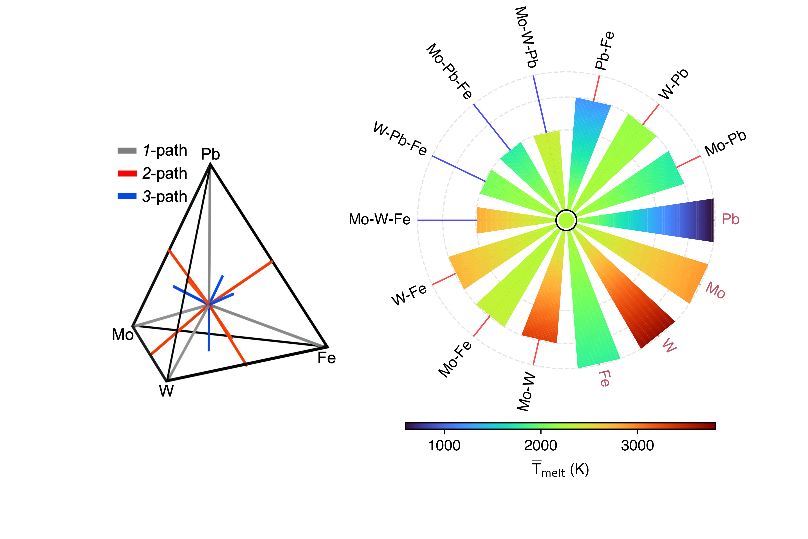

High-symmetry paths
Decompose an N-component simplex into paths that capture representative composition trends.
Scientific visualization · First-author research
A symmetry-conserving polar-plot method for seeing how calculated or measured properties change across high-dimensional multi-principal-element alloy spaces.

High-dimensional composition spaces, organized around their symmetry.The problem
Binary and ternary diagrams are intuitive; four or more components are not. SymPlex decomposes a high-dimensional composition simplex into representative high-symmetry paths, making multicomponent trends visible without pretending the underlying geometry is two-dimensional.
What the method preserves
The plot is designed around equivalence and symmetry, so repeated information is compressed while important compositional relationships remain readable.
Decompose an N-component simplex into paths that capture representative composition trends.
Keep equivalent directions and regions visually consistent instead of choosing an arbitrary projection.
Visualize precomputed thermodynamic, structural, electronic, or custom user-supplied quantities.
Arrange high-dimensional paths in a compact polar layout that supports comparison at a glance.
Use the supplied example notebook to load existing properties or construct plots from new data.
Apply the method inside RAPTor to inspect phase fractions, stability measures, and spinodal metrics.
Research connection
The SymPlex paper introduces the visualization strategy and demonstrates why conventional low-dimensional slices can miss the structure of a multi-principal-element composition space. The repository turns that method into an inspectable notebook workflow, and RAPTor extends it into interactive thermodynamic exploration.
Explore next
SymPlex is both a standalone visualization method and a core way of seeing results inside the broader RAPTor platform.